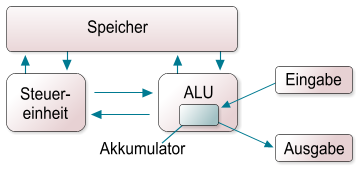

Einleitung¶
Computergeschichte¶
Beschreibung
In diesem Kapitel wird die Geschichte des Computers von seinen mechanischen Anfängen, über die frühen Relais- und Röhrenrechner bis hin zu den auf Microchips basierenden Rechnern der Neuzeit behandelt. Auch wenn dieses Kapitel nicht in unmittelbarem Zusammenhang mit Linux steht, so bietet es doch interessante Hintergrundinformationen, welche die Möglichkeiten und Einschränkungen beim Umgang mit einem Computer, also auch einem Linuxsystem, verständlicher machen können.
Analoges¶
Man kann die Geschichte der Computer erst mit dem Aufkommen digitaler Rechengeräte beginnen lassen, aber wer sich einmal mit analogen Rechengeräten beschäftigt hat, wird dies sicher schade finden. Selbst die verschiedensten historischen Mess- und Zeichengeräte möchte man als Vorläufer des heutigen universalen Computers betrachten. Zirkel, Lineale, Rädertriebe u.ä. wurden bereits in der Antike verwendet und leisteten für ihre Verhältnisse unschätzbare Dienste in Geometrie, Landvermessung, Navigation und Astronomie - sicher alles Tätigkeitsfelder, in denen heute der Computer Einzug gehalten hat.
Um sich bei der Berechnung großer Zahlen zu behelfen, hat der Mensch zahlreiche Hilfsmittel erdacht, die mitunter skurril anmuten, aber dennoch teilweise erstaunlich leistungsfähig waren. Der mittelalterliche Abakus lässt mit Leichtigkeit Berechnungen bis in den Milliardenbereich zu. Noch heute lernen z.B. in China die Absolventen kaufmännischer Berufe mit einem ganz ähnlichen Gerät zu rechnen.
Eine ganz eigene Welt öffnet sich mit dem Aufkommen mechanischer Addiermaschinen. Basierten die ersten dieser Geräte noch auf handgefeilten Zahnrädern und produzierten somit noch gewisse Ungenauigkeiten, leisteten spätere Varianten mit “verbesserter Hardware” doch schon Erstaunliches. Insbesondere das Problem des Zehnerübertrags lässt die Walzen und Hebel einer solchen Maschine mitunter phantastische Prozeduren durchlaufen. In heutigen Rechenchips hat sich dieses Problem in Form von “Übertragsbits” erhalten - die Zeiten ändern sich, aber die Probleme bleiben ...
Ein interessantes Gebiet, das heute zu den wichtigsten in der Informatik gehört, ist die Verschlüsselung von Information, bevorzugt Textinformation. Frühe Algorithmen, die vorwiegend auf Substitution basieren, bieten bereits einige über 3000 Jahre alte Geheimschriften der Ägypter und Mesopotamier an. Später entwickelten sich dynamischere Zeichenzuordnungen, indem z.B. verstellbare Ringe zur Chiffrierung und Dechiffrierung verwendet wurden. In der Neuzeit gewinnen Chiffriergeräte insbesondere im militärischen Bereich an Bedeutung. Hier sei etwa an die Geschichte der ENIGMA erinnert - ursprünglich gebaut aus zwei elektrischen Schreibmaschinen, die durch ein Bündel von Drähten verbunden wurden. Eine Weiterentwicklung dieses Geräts wurde im zweiten Weltkrieg von der deutschen Wehrmacht verwendet - über 100.000 ENIGMAs ließ sie bauen und vertraute nahezu blind auf die Sicherheit ihrer Verschlüsselung. Die Tatsache, dass die Briten die Verschlüsselung der ENIGMA durch den Einsatz tausender Mathematiker brechen konnten, spielte keine unerhebliche Rolle für den weiteren Verlauf der Ereignisse.
Der Einbruch des Digitalen¶
Alle bislang erwähnten Hilfsmittel und Geräte haben nichts mit dem Dualsystem zu tun und sind daher nur indirekte Vorläufer heutiger Rechner. Erst die Verknüpfung des Dualsystems mit einigen technischen Entwicklungen ließ die Leistung der entwickelten Rechengeräte Schlag um Schlag wachsen.
Als Erster beschrieb Gottfried Wilhelm Leibniz eine Rechenmaschine zur Durchführung von Rechnungen im Dualsystem. Viel später, im Jahr 1933, entschloss sich Konrad Zuse, das Dualsystem seiner geplanten Rechenmaschine zu Grunde zulegen. Dieses Gerät, die sogenannte Z1, wurde 1939 fertiggestellt und verwendete rein mechanische Schalt- und Speicherglieder.
Die Geschwindigkeit (und die Menge) mechanischer Glieder ist naturgemäß beschränkt. Der Fortschritt auf dem Gebiet der Elektrotechnik ermöglichte nun den Einsatz von elektromechanischen Relais anstelle der rein mechanischen Teile. Ein Schaltkreis dient auf einfachste Weise zur Abbildung des dualen Systems: Durch Schaltkontakte kann der Stromfluss geöffnet und geschlossen werden. AUS-Zustand und EIN-Zustand können nun die 0 und die 1 des Dualsystems abbilden. Das Schließen eines solchen elektrischen Kontaktes kann auf verschiedene Arten geschehen.
Die 1940/41 von Zuse erbaute Z3 verwendete elektromagnetische Relais, in denen eine Spule ein Magnetfeld erzeugte und dadurch ein Metallplättchen anzog. Dieses schloss den Stromkreis - das Bit hatte seinen Wert geändert. Die Z3 in Aktion hat einen unvergleichlichen Charme. Nach der Eingabe einer Rechenaufgabe beginnen hunderte von Metallplättchen der aufgereihten Relais scheinbar unkoordiniert zu wippen und zu klappern, bis das Gerät schließlich auf wundersame Art und Weise verstummt und das Ergebnis der Berechnung präsentiert. Interessant ist, dass CPU und Speicher gewissermaßen in ein linkes und ein rechtes “Relais-Regal” unterteilt sind. Nach einer Berechnung kann man den Speicherrelais ansehen, dass sie teilweise “EIN” oder “AUS” sind - auch wenn man nicht im entferntesten erahnen kann, warum es nun gerade diese Auswahl an Plättchen ist, die auf “EIN” steht. Glücklicherweise werden Rechenergebnisse benutzerfreundlich auf einem Bedienelement angezeigt - im Dezimalsystem wohlgemerkt.
Der nächste rein elektrotechnische Fortschritt bestand in der Verwendung von Röhrenschaltungen anstelle von Relais. Wir wollen hier nicht auf die Technik von Elektronenröhren eingehen, aber ihr Vorteil gegenüber den teilweise noch mechanischen Relais besteht in der viel höheren Geschwindigkeit, mit der sie von EIN nach AUS oder umgekehrt umschalten können. Schaltzeiten von einigen Mikrosekunden sind mit Röhren möglich. Das Grundprinzip aber bleibt dasselbe: Geschlossener bzw. offener Stromkreis bilden 0 und 1 des dualen Systems ab und ermöglichen somit Berechnung und Speicherung. Besonders leicht lässt sich mit Hilfe von Röhren die logische Grundfunktion NOR realisieren. Der erste aus Elektronenröhren aufgebaute Rechner war der ENIAC (Electronic Numerical Integrator and Computer, USA 1946). Er hatte ca. 18.000 Röhren und benötigte fast 140 Kilowatt.
Röhren waren zwar schnell, aber sie gingen leicht kaputt. Um genau zu sein, waren die Bedienteams der Röhrenrechner mehr damit beschäftigt, die Röhrenbänke präventiv auszutauschen, als dass sie irgendwelche Programme laufen lassen konnten. Außerdem sind Röhren so groß, dass die Röhrenrechner das Ausmaß eines Kinderzimmers annahmen. Es dauerte nicht allzu lange, bis Transistor-Schaltkreise an die Stelle von Röhrenschaltungen traten. Transistoren sind kleiner, leben länger, verbrauchen weniger Strom, entwickeln weniger Wärme und können dadurch auch dichter gepackt werden. Die Schaltzeiten liegen im Nanosekundenbereich. Um 1960 waren die Röhren in Computern nahezu vollständig durch Transistoren verdrängt. Bis heute bilden Transistoren das Basiselement der Recheneinheiten eines Computers. In modernen CPUs sind heute knapp 100 Millionen Transistoren verbaut.
Die weiteren Fortschritte auf elektrotechnischer Ebene wurden durch die Miniaturisierung der Transistortechnik erzielt. Mit der Entdeckung von Silizium als Baumaterial wurde es zunächst möglich, Dutzende von Transistoren auf einen Chip zu packen. Diese Entwicklung setzte sich fort und ermöglichte bald Tausende, Hunderttausende und schließlich Millionen von Transistoren auf einem einzigen Chip. Diese Chips konnten massenhaft produziert werden und ermöglichten so die Konstruktion von relativ günstigen Minicomputern. Da es sich hier im Wesentlichen um physikalische und chemische Fortschritte bei den Fertigungsprozessen handelt, wollen wir diese Entwicklung nicht im Detail verfolgen. Wenden wir uns stattdessen der Entwicklung der Konzepte zu, die zum heutigen, mit einem (oder gar mehreren) Betriebssystem(en) ausgestatteten, programmierbaren Computer führte.
Das von Neumann-Modell¶
Ein Mitglied des ENIAC-Projektes war John von Neumann. Von Neumann war ein weltweit bekannter Mathematiker und wird gelegentlich als ein Genie vom Range eines Leonardo da Vinci bezeichnet. Er hatte ein phänomenales Gedächtnis und neben der Mathematik auch ausgezeichnete Kenntnisse in Physik. Ihm fiel auf, dass die Programmierung des ENIAC über das Umstecken von Kabeln und das Betätigen von Schaltern viel zu umständlich war. Er entwarf daher ein Konzept, das heute als “von Neumann-Maschine” bekannt ist, und nach dem auch das Programm selbst im Speicher des Rechners abgelegt wird. Man muss nicht lange überlegen, um zu verstehen, dass diese Idee die Programmierung von Computern revolutionierte. Wenn sich ein Programm im Speicher des Rechners befindet, sind lediglich einige Ladevorgänge erforderlich, um ein anderes Programm auf dem Rechner laufen zu lassen. Damit wird die Maschine flexibler und universeller, und das Schreiben und Testen von Programmen wird viel einfacher.
von-Neuman Modell; Grafik Rolf Brunsendorf
Das Modell besteht aus fünf Teilen: Speicher, Rechenwerk, Steuereinheit, sowie Ein- und Ausgabe. Die wichtigsten Prinzipien lauten wie folgt:
- Der Speicher enthält sowohl die Operationen selbst als auch die Daten, auf denen die Operationen ausgeführt werden.
- Die Steuereinheit entspricht einem Befehlsprozessor, in dem die Anweisungen eines Programmes interpretiert und die Ausführung dieser Befehle (z.B. in der richtigen Reihenfolge) gesteuert werden.
- Das Rechenwerk (ALU = arithmetic logical unit) entspricht einem Datenprozessor, in dem die notwendigen datentransformierenden Operationen durchgeführt werden.
- Ein- und Ausgabe bilden die Schnittstelle zur Außenwelt, es ist jedoch nicht festgelegt, wie diese Mechanismen implementiert sind.
Die Entwicklung des Massenmarktes bis zum heutigen PC¶
Der erste echte “Minicomputer” auf der Basis von Transistoren war die PDP 1 der Digital Equipment Corporation (DEC). Die PDP 1 kam 1961 auf den Markt. Sie war zwar “nur” halb so schnell wie die damals schnellste Rechenmaschine, die IBM 7090, kostete dafür aber nur einen Bruchteil der IBM, nämlich $ 120.000. DEC verkaufte Dutzende PDP 1. Ein richtiger Renner hingegen sollte einige Jahre später die PDP 8 werden, die nur noch $ 12.000 kostete und über 50.000 Mal verkauft wurde. DEC war zur damaligen Zeit der Markführer im Minicomputer-Geschäft.
Mit der PDP 8 wurde eine interessante Neuerung eingeführt. Es wurden alle Komponenten der PDP 8 über einen einzigen Bus, den so genannten Omnibus, miteinander verbunden. Die Kommunikation der CPU mit Speicher und Geräten geschieht also über ein gemeinsames Bündel paralleler Drähte. CPU, Speicher und E/A-Geräte müssen sich diesen Bus teilen und sich darüber abstimmen, wer wann Daten über den Bus schicken darf. Die Idee eines solchen Busses finden wir auch heute noch in gewöhnlichen PCs, z.B. als PCI-Bus oder auch als USB-Bus.
Etwa ab 1965 bot IBM eine neue Serie von Rechnern auf der Basis von integrierten Schaltungen an, die sogenannte 360er Serie. Es handelte sich dabei um eine ganze Familie von Rechnern, welche die gesamte Bandbreite der Anforderungen vom wissenschaftlichen Supercomputer bis zum Einsatz im kommerziellen Bereich abdecken sollte. Erstmals achtete IBM darauf, dass Software, die für die kleineren Modelle geschrieben wurde, auch auf den größeren laufen konnte und umgekehrt. Das Konzept der Rechnerfamilie war geboren und sollte sich bald durchsetzen.
Die 360er Rechner wiesen eine weitere Neuerung auf, den sogenannten Mehrprogrammbetrieb. Dabei können sich zu einem Zeitpunkt mehrere Programme gleichzeitig im Speicher befinden. Diese Möglichkeit führte zu einer besseren Ausnutzung der CPU, weil jeweils ein anderes Programm ausgeführt werden konnte, wenn ein Programm in seinem Ablauf unterbrochen wurde, um beispielsweise eine langsame Ein-/Ausgabe durchzuführen.
Trotz DECs Bemühungen, die Preise auf dem Minicomputer-Markt zu drücken (mittlerweile war die PDP 11 insbesondere an Universitäten sehr erfolgreich), blieben Computer bis ca. 1980 für Normalsterbliche unerschwinglich. Die immer dichter mit Transistoren bepackten Chips führten unterdessen dazu, dass Rechenleistung und Speicher immer erschwinglicher wurden. Damit begann die Ära des Personal Computers (PC).
Lassen wir die wenigen Vorläufer unseres heutigen PCs (wie z.B. die frühen Apple-Computer, die Commodores, Amigas und Ataris, deren ehemaligen Besitzern noch heute ein Glänzen in die Augen steigt, wenn von ihnen die Rede ist) sträflich außer acht und steuern direkt auf die Neuzeit zu. IBM hatte diesen Markt eine Weile beobachtet und dann entschieden, selbst einzusteigen. Da keine Zeit zu verlieren war, baute man den IBM-PC aus Teilen, die bereits auf dem Markt erhältlich waren. 1981 führte IBM seine Konstruktion auf dem Markt ein und verbuchte damit sofort einen überwältigenden Erfolg.
Nun tat IBM etwas, was im Nachhinein vielleicht als Fehler zu bezeichnen ist. Um anderen Herstellern die Entwicklung von Steckkarten für seinen PC zu ermöglichen, veröffentlichte es sämtliche Pläne und Schaltdiagramme des IBM-PCs. Da alle Teile ohnehin auf dem Markt erhältlich waren, fanden sich schnell alternative Anbieter, die Klone des PCs herstellten. Damit war ein neuer und milliardenschwerer Markt geboren.
Ungefähr um diese Zeit begann auch der Aufstieg eines kleinen Unternehmens namens Microsoft. Diese Geschichte zu erzählen, wollen wir jedoch anderen überlassen.
Da sich an der grundlegenden PC-Architektur seit der Einführung des IBM-PCs nichts Wesentliches mehr geändert hat, sind wir bereits in der Gegenwart angelangt und wollen unseren kurzen Streifzug durch die Computergeschichte an dieser Stelle beenden. Wir tun dies in dem Bewusstsein, viele großartige Meilensteine nicht einmal erwähnt zu haben.
Mit eigenen Augen¶
Wer sich für einen tieferen Einblick in die Geschichte der Datenverarbeitung interessiert, dem sei das Heinz Nixdorf Museums-Forum in Paderborn empfohlen. Die Ausstellung des Museums erzählt mit über 2000 Objekten die Geschichte der Informationstechnik.
Autor
- Matthias Kleine kleine_matthias@gmx.de
Formatierung
- Matthias Kleine kleine_matthias@gmx.de
Was ist Linux?¶
Begriffsklärung¶
Es soll hier zunächst einmal klargestellt werden, was man unter dem Begriff “Linux” eigentlich versteht, und wie dieser Begriff hier im SelfLinux-Tutorial (auch) verwendet wird.
Prinzipiell ist mit dem Begriff “Linux” nur der Kernel gemeint, also der Teil des Systems, der z.B. die Ressourcen für die laufenden Programme und die Anwender verwaltet. Obwohl der Kernel ein essentieller Teil des Systems ist, wäre er ohne zusätzliche Software allerdings nutzlos. Um diesen Kernel effektiv nutzen zu können, ist weitere (teilweise sehr systemnahe) Software notwendig, also das eigentliche Betriebssystem. Derzeit wird in den meisten Fällen die Software des GNU-Projektes (http://www.gnu.org) in Verbindung mit dem Linux-Kernel verwendet. Das GNU-Projekt entwickelt bereits seit 1984 Freie Software (http://www.gnu.org/philosophy/free-sw.de.html), unter anderem das Unix-ähnliche Softwaresystem GNU. Als 1991 die Arbeit am Linux-Kernel begann, war dieses Softwaresystem bereits fast fertig, sodass man auf einen Großteil Freier Software für die Linux-Entwicklung zurückgreifen konnte.
Heute sind beide Komponenten, der Linux-Kernel und die GNU-Betriebssoftware, kaum noch voneinander zu trennen. Beide Teile haben sich gegenseitig vorangebracht und gegenseitig befruchtet.
Korrekterweise müsste man also eigentlich, wenn man das Betriebssystem meint, von “GNU/Linux” sprechen, da hier immer der Kernel (Linux) und die Systemwerkzeuge (GNU) gemeinsam gemeint sind.
Es hat sich allerdings heute eingebürgert, dass umgangssprachlich unter dem Begriff “Linux” die Kombination aus Kernel und Systemwerkzeugen gemeint ist. An vielen Stellen in diesem Tutorial (beginnend bereits im vorliegenden Text) wird dies genauso gehandhabt. Es finden sich also als Bezeichnung für das Betriebssystem gleichbedeutend die Begriffe “Linux” und “GNU/Linux”, und für den Kernel “Kernel” oder “Linux-Kernel”. Dies soll keinesfalls eine Verunglimpfung der hervorragenden Arbeit des GNU-Projektes sein, sondern trägt eher der Tatsache Rechnung, dass diese Benennung heutzutage von den meisten Anwendern verstanden und benutzt wird.
Eine detaillierte Erklärung über die Zusammenhänge zwischen GNU und Linux ist auf http://www.gnu.org/gnu/linux-and-gnu.html zu finden.
HINWEIS: Natürlich wird auf GNU/Linux-Systemen nicht nur Software eingesetzt, die unter der GNU GPL steht. Es gibt viele andere Freie Lizenzen, unter denen Software stehen kann. Einen ersten Überblick kann man sich auch hier beim GNU-Projekt auf http://www.gnu.org/licenses/licenses.html verschaffen.
Kurze Einführung¶
(GNU/)Linux ist ein hochstabiles, sehr schnelles und voll funktionsfähiges Unix-ähnliches Betriebssystem. Es wird von einer Gemeinschaft von tausenden von Leuten im Internet programmiert und unter der GNU General Public License verteilt, das heisst, es ist frei erhältlich. Es wird weltweit von mehreren Millionen Leuten, Organisationen und Firmen benutzt (aktuelle Zahlen gibt es beim Linux Counter).
Linux
Das ist nur der Kernel. Ein Kernel ist ein Stück Software, das die Kommunikation zwischen den einzelnen Hardwarekomponenten und den Anwenderprogrammen regelt. Das mag trivial klingen, ist aber eine sehr komplexe Aufgabe. Jedes OS (Operating System) hat einen Kernel, nur werden die wenigsten nach dessen Namen benannt.
Betriebssystem (engl. Operating System)
Ein Kernel allein nützt noch (fast) niemandem etwas. Damit ein Mensch mit ihm arbeiten kann braucht ein OS weitere, elementare Programme, um funktionieren zu können.
Shell
Eine Shell ist ein Programm, das zwischen dem Benutzer und dem System arbeitet. Auf der Shell hat man die Möglichkeit, Befehle und Programme auszuführen. Zudem verfügt jede Shell über eine eigene Skriptsprache. Damit können Skripte zur Arbeitserleichterung geschrieben werden. Unter Linux ist die Bash (Bourne Again Shell) die Standardshell.
X-Server
Es ist möglich ein Linux-Betriebssystem (also Kernel und Systemprogramme) auf einem Plattenplatz von <50 MB unterzubringen (zum Beispiel mit Hilfe einer RAM-Disk, wie sie bei Embedded-Linux-Systemen verbreitet ist). Allerdings steht dann mit Sicherheit nur eine Shell (Befehlszeilen-Prompt) als Benutzerschnittstelle zur Verfügung. Heute möchten nur noch wenige den Komfort einer grafischen Benutzeroberfläche missen, trotzdem ist eine grafische Oberfläche (unter Unix X-Server, X Window System oder X11 genannt) nicht Teil des Betriebssystems, sondern ein Programm, das auf diesem läuft.
Desktop
Der X-Server bringt einem nicht den gewünschten Arbeitskomfort. Dazu dient ein Desktop wie KDE oder GNOME. Dieser ermöglicht das Arbeiten, wie man es von anderen grafischen Betriebssystemen her kennt. Man verfügt über eine Arbeitsfläche mit Fenstern und kann Programme über Icons starten.
Bibliothek
Eine Bibliothek ist eine Sammlung von wiederkehrenden Programmteilen. Da viele Programme gleiche oder ähnliche Teile haben, ist es ineffektiv, diesen Teil immer wieder zu programmieren. Daher werden diese Teile in eine externe Datei ausgelagert. Da mehrere Programme darauf zugreifen, kann die Grösse des einzelnen Programms verkleinert werden. Fehlt die Bibliothek, läuft aber das gesamte Programm nicht mehr. Dies sind dann die berühmten fehlenden Abhängigkeiten.
Anwendungen
Alles was wir so zum Arbeiten mit dem Computer brauchen, also z. B. eine Office-Software, Internet-Tools, Buchhaltungen, Spiele, Bildbearbeitung, Audio-Software, etc.
Distribution
Alles oben Genannte zusammengestellt und aufeinander abgestimmt ergibt eine Distribution. Linux-Distributoren sind unabhängige Organisationen, die Software für Linux sammeln und vertreiben.
Eigenschaften von Linux¶
- Entweder 32- oder 64-bittig, abhängig von der Computer-Architektur.
- Multi-User: mehrere Benutzer können gleichzeitig auf derselben Maschine arbeiten.
- Multi-Plattform: Linux läuft auf den verschiedensten Prozessoren.
- Multi-Processing: SMP (Symmetric Multi-Processing) für bis zu 256 Prozessoren.
- Clustering: Cluster von beliebiger Grösse (es gibt schon solche über 1000 Maschinen).
- Geschützter Speicher: damit ein Prozess nicht das ganze System zum Absturz bringen kann.
- Programme, die bestimmte Teile nur nachladen, wenn sie wirklich gebraucht werden.
- Virtueller Speicher mit Paging (das heisst nur Teile von Prozessen können auf die Festplatte ausgelagert werden).
- Freier Speicher wird in einem Pool verwaltet, der sowohl Programme als auch Disk-Cache bedient: der gesamte freie Speicher kann zum Cachen verwendet werden.
- Verwendung von dynamisch gelinkten Bibliotheken; statische Bibliotheken können selbstverständlich auch verwendet werden.
- Größtenteils kompatibel mit Unix (POSIX, System V und BSD) Der Unix98-Standard wird ebenfalls angestrebt.
- POSIX-kompatible Job-Kontrolle. Realtime Scheduling ist ebenfalls möglich.
- Ein nicht fragmentierendes Dateisystem (Extended 2) mit langen Dateinamen (255 Zeichen) und Partitionen von bis zu 4 Terabyte. Es unterstützt Hard- und Softlinks.
- Viele Dateisysteme mit Journaling stehen zur Auswahl. unter anderem Ext3, ReiserFS, JFS und XFS.
- Unterstützt zahlreiche Dateisysteme, unter anderem VFAT / FAT32, Windows NT / NTFS, MacOS / HFS, QNX, BSD 4.3 ufs, Coda und Amiga / AFFS.
- Bis zu 64 virtuelle Konsolen.
- Der ganze Quellcode ist erhältlich, eingeschlossen der ganze Kernel und (fast) alle Treiber.
- Schnell, sogar richtig schnell! Und wahrscheinlich der schnellste TCP/IP-Stack der Welt.
- Ein Großteil der PC-Hardware wird unterstützt, dazu gehören auch Sound-, Ethernet-, ATM-, Appletalk-, TV-, ISDN- und Multiport-Karten, Joysticks etc.
- Viele Netzwerk-Protokolle wie TCP/IP Versionen 4 und 6, IPX/SPX, Token-Ring, Ethertalk, Appletalk etc.
- Viele konfigurierbare Netzwerk-Funktionen wie Masquerading (NAT), Tunneling, Forwarding, Routing, Firewalling etc.
Unterstützte Plattformen¶
- Intel x86 / IA-32 (i386): PCs mit Intel-, AMD- oder Cyrix-Prozessoren, die zum 80386 kompatibel sind.
- IA-64 (ia64): Der neue Intel-Prozessor wird von Beginn an unterstützt.
- AMD64: Der 64bit-Prozessor von AMD wird ebenfalls von Anfang an unterstützt.
- Motorola/IBM PowerPC (powerpc): Power Macintosh und Kompatible. Beachten Sie, dass es zwei Linux-Versionen für den PPC gibt: eine generische und eine, die auf dem Mach-Microkernel aufbaut.
- Motorola 68k (m68k): MicroLinux und uClinux für 68000 Prozessoren ohne MMU: Palmpilot, Amiga 500, ColdFire. Ebenso für Atari und verschiedenste embedded Systeme.
- MIPS R3000: Digital Decstations (mipsel) und SGI Computer (mips).
- ARM (arm): Acorn Archimedes.
- DEC Alpha (alpha): DEC Alpha und Kompatible.
- Sun Sparc (sparc): Sun4c und höher. Ebenso UltraSparc-Prozessoren. Das ist einer der schnellsten und stabilsten Ports.
- HP PA-RISC (hppa): Hewlett-Packard PA-RISC-Architektur.
- S/390 (s390): IBM S/390-Server und IBM zSeries.
Voraussetzungen¶
Linux benötigt mindestens 4 MB RAM, beziehungsweise 8 für das X Window System. 128 MB werden empfohlen. Es ist möglich, ein Minimal-System mit weniger als 50 MB Festplatten-Platz zu installieren, aber wir empfehlen 1 GB. Für die CPU ist bei Intel Prozessoren ein 80386sx das Minimum.
Wer benutzt Linux?¶
Viele Privatpersonen benutzen es als Workstation; speziell Studenten, System-Betreuer und Programmierer. Linux wird auch in vielen Firmen eingesetzt, dort vor allem als Server für verschiedene Aufgaben wie Mail, WWW, File-Server, Firewalls oder auch als Application-Server. Einige Firmen benutzen Linux als über das Netz wartbare Thin Clients.
Gründe, Linux zu benutzen¶
Es ist schneller, stabiler und besser skalierbar als so manches kommerzielle System. Anschaffungs- und Unterhaltskosten sind niedrig, was zu einem hervorragenden Preis-/Leistungsverhältnis führt. Die Hardwareunterstützung ist besser als bei den meisten anderen Unix-Systemen. Die Quellen sind verfügbar. Fehler werden sehr schnell behoben, oft innerhalb weniger Stunden nach der Entdeckung.
Wer leistet Support für Linux?¶
Sie erhalten gratis Support von zahlreichen Internet-Newsgroups, Mailinglisten und ungezählten WWW-Seiten. Sie haben die Möglichkeit, dem Programmierer einer Software direkt eine Mail zu schicken. Sie können auch mit Ihrer lokalen Linux oder Unix User Group Kontakt aufnehmen. Wenn Sie kommerziellen Support benötigen, können Sie sich an einen der Distributoren oder eine Firma, die Linux einsetzt und unterstützt, wenden. Eine Liste solcher Firmen erscheint beispielsweise monatlich im Linux-Magazin (http://www.linux-magazin.de).
Warum der Pinguin?¶
Viele haben sich sicher schon einmal gefragt, warum gerade ein Pinguin das am weitesten verbreitete Symbol für Linux auf der Welt ist.
Alles begann damit, dass eine Linux User Group in Bristol in England für Linus Torvalds einen Pinguin gekauft hat. Linus machte sich auf den weiten Weg um das Tier zu besuchen. Als er dort ankam, stellte sich heraus, dass sie ihm keinen Pinguin gekauft, sondern nur in seinem Namen eine Patenschaft für einen Pinguin übernommen hatten. Aber wie kam es jetzt, dass der Pinguin als Symbol für Linux genommen wurde? Dies war die Idee von Tove, seiner Frau. Linus versuchte ein Symbol für Linux zu finden, da ihn viele Leute darauf ansprachen, dass es gut wäre, ein eigenes Symbol zu haben. Die anderen Linux Firmen hatten ja zu dem Zeitpunkt auch schon alle eigene Logos. Seine Frau dachte bei der Logosuche an Pinguine, weil Linus in einem Zoo in Australien einmal von einem Pinguin gebissen wurde. Dies geschah beim Versuch, die Pinguine einfach so über ihren Zaun hinweg zu streicheln.
Nach diesem Erlebnis entwickelte Linus komischerweise eine Leidenschaft für Pinguine und Tove machte den Vorschlag, er solle doch einfach einen Pinguin als Logo nehmen. Linus sprach die Idee des Pinguins nach langem Überlegen mit Henry Hall und Maddog ab und schließlich entschieden sie sich dafür, dass der Pinguin gut ist.
Als nächstes spornte Linus die Internetgemeinde an, ihm Bilder von Pinguinen zu schicken. Linus gab sich jedoch nicht mit einem x-beliebigen Pinguin ab, nein, sein Pinguin sollte glücklich aussehen, “so als hätte er eine Maß Bier genossen und den besten Sex seines Lebens gehabt”. Er wählte die Version von Larry Ewing, einem Grafiker, der am Institute for Scientific Computing an der A&M University in Texas arbeitete, aus. Der Pinguin sollte unverwechselbar sein, was er mit Tux, so sein Name, auch geschafft hat.
Während normale Pinguine einen schwarzen Schnabel und schwarze Füße haben, sollte das Linux Maskottchen wegen der Einzigartigkeit einen orangen Schnabel und orangefarbene Füße haben, so dass es so aussieht, als sei die Mutter des Pinguins eine Ente. “Als hätte Daisy Duck sich auf einer Antarktis-Kreuzfahrt vergessen und einen wilden One-Night-Stand mit einem einheimischen Federvieh gehabt”.
Nähere Informationen in dem Buch: Linus Torvalds und David Diamond Just for fun. Wie ein Freak die Computerwelt revolutionierte ISBN: 3-423-36299-5
Autoren
- Lugs philipp.frauenfelder@swissonline.ch
- Heiko Degenhardt hede@pingos.org
- Nico Golde nion@gmx.net
Formatierung
- Matthias Hagedorn matthias.hagedorn@selflinux.org
Linux Geschichte¶
Die Geschichte von Linux
1991
Der 21-jährige finnische Student Linus Benedict Torvalds beginnt, aufbauend auf dem Minix Betriebssystem, ein unixartiges Betriebssystem für AT-386-Computer zu schreiben. Er schreibt am 5. Oktober in der Newsgroup comp.os.minix:
”...As I mentioned a month ago, I’m working on a free version of a Minix-look-alike for AT-386 computers. It has finally reached the stage where it’s even usable (though may not be, depending on what you want), and I am willing to put out the sources for wider distribution. It is just version 0.02 - but I’ve successfully run bash, gcc, gnu-make, gnu-sed, compress, etc. under it.”
1992
Linus Torvalds verteilt die Version 0.12 per anonymous FTP im Internet, was zu einem sprunghaften Anstieg der Zahl interessierter Benutzer führt. Da diese Zahl so groß wird, dass die nötige Kommunikation nicht mehr per E-Mail zu bewältigen ist, wird in den Usenet News die Gruppe alt.os.linux ins Leben gerufen. Dies hat zur Folge, dass eine explosionsartige Weiterentwicklung des Systems im ganzen Internet entsteht und von Linus Torvalds fortan koordiniert wird.
1993
Bereits über 100 Programmierer arbeiten am Linux-Code mit. Durch Anpassung des Linux-Kernels an die GNU-Umgebung der Free Software Foundation (FSF) im Jahre 1993 wachsen die Möglichkeiten von Linux erneut stark an, da man nun auf eine große Sammlung an vorhandener freier Software und Tools zurückgreifen kann, die unter Linux laufen.
1994
Mit der Linux-Version 1.0 wird der Betriebssystem-Kernel netzwerkfähig und die User-Zahl steigt auf 100.000 an. Ein wichtiger Schritt, der ebenfalls im Jahre 1994 geschieht, ist auch die Anpassung einer grafischen Benutzerschnittstelle (GUI) auf Linux. Diese wird von einer weiteren Non-Profit-Gruppe, dem XFree86-Projekt, beigesteuert. Linus Torvalds stellt nun den Quelltext des Linux-Kernels offiziell unter die GPL. Somit ist die freie Existenz von Linux gesichert.
1995
Linux wird auf die Plattformen Digital (DEC) und Sun Sparc portiert. Damit kann sich das neue Betriebssystem nun mit vollem Schwung auf den vielen Plattformen ausbreiten.
1996
Mit der neuen Version 2.0 des Linux-Kernels können nun mehrere Prozessoren gleichzeitig angesteuert werden. Linux verliert langsam seinen Bastlerstatus und wird zu einer ernst zu nehmenden Alternative für Firmen.
1997
Nun erscheinen wöchentlich neue, aktualisierte Versionen des Linux-Kernels. Verschiedene namhafte Firmen beginnen, ihre Software auf Linux zu portieren: Netscape seinen Webbrowser, Applixware seine Office-Anwendung und die Software AG ihre Datenbank Adabas D. Damit gibt es immer mehr kommerzielle Software-Pakete für Linux.
1998
Das Desktop-Projekt KDE wird gestartet. Es arbeiten etwa 750 Programmierer am Quellcode dieser heute am weitesten verbreiten Desktopumgebung.
Seit diesem Jahr überschlagen sich die Ereignisse rund um Linux. Viele namhafte Hardware- und Softwarehersteller kündigen die Portierung ihrer Produkte auf Linux an.
Darunter finden sich Firmen wie de IBM und de Compaq, die Linux als Betriebssystem auf ihren Computern unterstützen. Informix und Oracle entwickeln ihre Datenbanken fortan auch für Linux.
Netscape gibt die Quellen seines Webbrowsers frei und lässt die zukünftige Entwicklung durch das Mozilla-Projekt vorantreiben.
1999
Die Kernelversion 2.2 erscheint. Sie verfügt über einen verbesserten SMP-Support und einen überarbeiteten Netzwerkcode.
Ein neues Desktop-Projekt mit dem Namen GNOME wird gestartet.
Zur Soundunterstützung erscheint das Open Sound System. Auch Samba wird in einer neuen Version 2.0 veröffentlicht.
Die Portierung von Domino Notes wird angekündigt, und IBM propagiert seine Linux-Strategie.
2000
Im März wird XFree86 in der Version 4.0 veröffentlicht.
KDE 2.0 erscheint.
IBM kündigt für 2001 Investitionen in Linux in der Höhe von 1 Milliarde Dollar an.
Sun veröffentlicht den Quellcode von StarOffice unter der LGPL (Lesser GPL) und legt damit den Grundstein für OpenOffice.
2001
Die Kernelversion 2.4 erscheint. Der Kernel unterstützt bis zu 64 GByte RAM und 64-Bit-Dateisysteme. Ebenso werden USB und Journaling Filesysteme unterstützt.
Linux läuft auf IBM iSeries (AS/400).
Samba 2.2 erscheint.
2002
Das OpenOffice-Projekt bringt OpenOffice in der Version 1.0 auf den Markt. Es ist ein komplettes Office-Paket mit Textverarbeitung, Tabellenkalkulation, Präsentationsmodul und läuft nicht nur unter Linux.
Der OpenSource Webbrowser Mozilla wird nach vier Jahren in der Version 1.0 veröffentlicht.
Auch bei den Desktops wird die nächste Runde eingeläutet: KDE 3.0 erscheint im Frühling, GNOME 2.0 zur Jahresmitte.
2003
Linus Torvalds wechselt von seinem bisherigen Arbeitgeber Transmeta in das Open Source Development Lab (OSDL). Dort wird er in Zukunft auch beruflich seine Zeit der Arbeit am Linux-Kernel widmen.
Linux findet zusehends Verbreitung auf Embedded Systemen.
Der Münchener Stadtrat hat sich am 28. Mai auf Grund einer Studie für die Umstellung seiner 14.000 Computer von Windows auf Linux entschieden.
XFree86 wird in der Version 4.3 veröffentlicht und bietet dadurch viele neue Treiber für moderne Grafikkarten.
KDE Desktop 3.1 erscheint.
OpenOffice wird in der Version 1.1 veröffentlicht, welches etliche Erweiterungen gegenüber den Vorgängerversionen bietet.
Samba erscheint in der Version 3.0, welche gerade im Bereich als Domänenkontroller viele Erweiterungen und Verbesserungen erfahren hat. Auch eine Integration in das von Windows 2000 eingeführte “Active Directory” ist nun möglich.
Gnome Desktop 2.4 erscheint.
Die Entwicklerserie 2.5 des Linux-Kernels wird geschlossen und in die Serie 2.6.0-test übergeführt.
Am 17. Dezember wird Version 2.6.0 des Linux-Kernels freigegeben.
2004
2004 war das Jahr der Livedistributionen. Stein des Anstoßes ist Knoppix, ein Debian Derivat, das bis heute viele Nachahmer auf den Plan gerufen hat. Weitere populäre Vetreter sind Kanotix, ein Fork von Knoppix, sowie die SuSE Linux Live CD.
NetBSD schafft nach über 10 Jahren den Sprung auf die Version 2.
Der größte deutsche Distributeur von Linux, die SuSE Linux AG, wird von Novell aufgekauft. Die Folge ist die Einstellung der SuSE Linux Personal Serie, die vor allem zur Verbreitung von Linux auf Heimcomputern geführt hatte.
KDE Desktop 3.3 erscheint. Die Groupware Kontact ist erstmals offizieller Bestandteil des Desktops.
Aufgrund von Unstimmigkeiten bei der Lizenz des XFree86 Projektes, die nicht mit der GPL vereinbar ist, wird die Xorg Foundation gegründet.
Gnome Desktop 2.8 erscheint.
Die Kernelentwicklung schreitet bis Version 2.6.10 fort.
Mandrake 10.1 steht ab Dezember zum Download bereit.
2005
Gnome Desktop 2.10 erscheint.
KDE Desktop 3.4 erscheint.
Openoffice Version 2 hat Beta-Status erreicht.
Mozilla Firefox und Thunderbird liegen in Version 1.02 vor.
Autoren
- Frank Börner frank@frank-boerner.de
- Johnny Graber selflinux@jgraber.ch
- Felix Grigoleit datenflut@web.de
Formatierung
- Matthias Nuessler m.nuessler@web.de
Was ist SelfLinux?¶
In diesem Kapitel geht es um die Entstehung die Ziele und den aktuellen Stand von SelfLinux.
Geschichte¶
SelfLinux ging 1999 aus dem Projekt “PingoS” hervor, das sich zum Ziel gesetzt hat, die Verbreitung von Linux in Schulen zu unterstützen. Noch heute sind einige Teammitglieder auch im PingoS-Projekt aktiv.
Wichtige Eckdaten des Projektes waren:
1999 Gründung des Projektes nach Diskussionen auf der SuSE Linux Mailingliste
März 2000 Registrierung bei SourceForge; damit ergab sich die Möglichkeit, eine professionelle Projektarbeit z.B. unter Verwendung von CVS zu beginnen
April/Mai 2000 Erstellung/Diskussion des ersten “Richtlinienentwurfs” über die Projektarbeit (Verwendung von CVS, Aufgaben der Admins, Bildung von Teams...)
Januar 2001 Neue Datenbank für die Verwaltung der Mitglieder, der Artikel und so weiter Juli 2001 Erste Testversion auf dem LinuxTag in Stuttgart
Juli 2002 Erstellung eines ersten “Basisrelease” mit den in unseren Augen notwendigsten Texten
September 2002 SelfLinux 0.2.0 erschienen
November 2002 SelfLinux 0.2.1 erschienen
Dezember 2002 SelfLinux 0.4.0 erschienen
Februar 2003 SelfLinux 0.6.0 erschienen
August 2003 SelfLinux 0.8.0 erschienen, SelfLinux 0.8.1 erschienen
Oktober 2003 Umzug des CVS-Repositories von Sourceforce zu PingoS SelfLinux 0.9.1 erschienen
Dezember 2003 SelfLinux 0.9.2 erschienen
Februar 2004 SelfLinux 0.9.3 erschienen
März 2004 SelfLinux 0.10.0 erschienen
Juni 2004 Umstellung des Repositories auf Subversion
August 2004 SelfLinux 0.11.0 erschienen
Oktober 2004 SelfLinux 0.11.1 erschienen
Nach den vielen Diskussionen der Anfangszeit hat sich nun ein Konzept herauskristallisiert, an dem derzeit viele Leute im gesamten deutschsprachigen Raum arbeiten. Die Idee hinter diesem Konzept sowie die möglichen Schritte zur Realisierung sollen im Folgenden beschrieben werden.
Aneignung von Wissen¶
Die Entwicklung der Informationstechnologie schreitet so schnell fort wie kaum eine andere. Die Aneignung des Wissens gerät daher häufig zu einer Art Wissens-Fastfood: Die Zeit ist knapp, aber das fehlende Wissen groß. Daher ist es wichtig, dass der zu lesende Stoff gut aufbereitet präsentiert wird. Denn eine systematische, anschauliche Einführung hilft lernen und Zeit sparen.
Derzeitige Linux-Dokumentation¶
Linux im engeren Sinne bezeichnet lediglich den Betriebssystem-Kern, mit dem der normale Anwender nur selten unmittelbar konfrontiert wird. In einem weiter gefassten Sinn kann man unter dem Begriff Linux jedoch auch all diejenigen Systembestandteile und Werkzeuge zusammenfassen, welche den täglichen Umgang mit einem Linux-System ausmachen und mit welchen der Benutzer oder Administrator aller Wahrscheinlichkeit nach in Kontakt geraten wird.
Für das System im Allgemeinen und auch für die meisten dieser Werkzeuge gibt es heute bereits eine recht gute Dokumentation (Manual-Pages, Info-Seiten, HTML-Seiten im Web, (Online-)Bücher, FAQs, HOWTOs u.v.a.m.). Diese vorhandene Linux-Dokumentation erscheint uns trotzdem ungenügend, denn:
- Sie besteht aus vielen isolierten Dokumenten.
- Sie baut folglich nicht logisch aufeinander auf.
- Sie ist vielfach nur in Englisch verfügbar.
- Sie ist häufig mangelhaft oder gar nicht illustriert.
- Sie nutzt nicht (oder nur in geringem Maße) die Möglichkeiten von Hypertexten.
Diese Situation hat einige unerwünschte Konsequenzen. Zum einen wird es dem Einsteiger oder Umsteiger erschwert, sich systematisch Kenntnisse über Linux anzueignen. Dies schreckt viele potentielle Benutzer ab, die sich vielleicht gern mit diesem freien Betriebssystem beschäftigen würden.
Zum anderen mangelt es dem erfahrenen Benutzer - bis hin zum Administrator - an einem umfassenden Nachschlagewerk, das die schnelle Einarbeitung in neue Themen oder die Suche nach speziellen Informationen erleichtert.
Eine systematische Einarbeitung sowie ein gezieltes Auffinden von Informationen sind somit kaum möglich, das Lernen geschieht vielmehr “on-the-fly”, unsystematisch und daher zeitintensiver als nötig.
Die Ziele von SelfLinux¶
SelfLinux möchte die in unseren Augen bestehenden Nachteile der derzeitigen Linux-Dokumentation schließen helfen. Im Vordergrund steht das Bestreben, einen Einblick in die Grundlagen der Arbeitsweise von Linux und der mit ihm verbundenen Werkzeuge zu geben. Der Benutzer und Administrator soll ein Verständnis für die Systemzusammenhänge entwickeln, das ihm bei der Problemlösung in der täglichen Arbeit behilflich sein wird. Von Anfang an möchten wir den Blick auch auf das richten, was “unter der Haube” geschieht, um Einblicke in die innere Logik des Systems zu geben, die vermutlich so viele Linux-Anhänger in ihren Bann zieht.
SelfLinux möchte vieles sein: Tutorial für Einsteiger, Ratgeber für Fortgeschrittene, bis hin zur Referenz für Profis. Aber natürlich können wir nicht alles auf einmal leisten. In den ersten Releases werden wir uns daher darauf konzentrieren, dem Einsteiger einen systematischen Weg zum fortgeschrittenen Linux-Wissen zu weisen. Wo bereits Texte verfügbar sind, werden wir jedoch auch den Fortgeschrittenen nicht vergessen. Ein Nachschlagen nach bestimmten Themen lohnt allemal. Wir sind darüber hinaus sicher, dass auch diejenigen, die sich für fortgeschritten halten, viele elementare Themen haben brach liegen lassen, so dass sich auch für sie eine Lektüre der Einführungskapitel lohnen wird. Was die Verwendung als Nachschlagewerk angeht, so möge man noch etwas Geduld mit uns haben. Hunderte Autoren werden nötig sein, um den Umfang eines echten Nachschlagewerkes zu ermöglichen. Wir arbeiten daran - und Sie sind herzlich eingeladen, im Rahmen Ihrer Möglichkeiten (mit ihren Fachkenntnissen ...) daran teilzunehmen.
Das Konzept von SelfLinux¶
SelfLinux möchte einem Buch näher kommen als einer eher zufälligen Wissenssammlung. Es soll möglich sein, sich Schritt für Schritt durch das gesamte Tutorial oder auch nur in bestimmte Abschnitte einzuarbeiten. Gleichzeitig möchten wir jedoch nicht nur den Einsteiger in dieser Weise unterstützen. Auch der Fortgeschrittene will Zeit sparen und nicht alle Grundlagen zum wiederholten Male lesen.
Dies möchten wir realisieren, indem wir Texte einem bestimmten Kenntnisstand zuordnen, wir nennen es “Runlevelkonzept”. Jeder Leser soll “nach Kenntnisstand” lesen können, d.h. genau das zu Gesicht bekommen, was er noch nicht kennt. Da wir für die Umsetzung des Runlevelkonzeptes eine große Textbasis benötigen, wird dieser Ansatz in den ersten Releases noch schwer zu realisieren sein, bleibt aber trotzdem das Ziel der Arbeit.
In den Diskussionen haben sich die folgenden drei wesentlichen Themen als “Eckpfeiler” für die Arbeit erwiesen:
- Das Layout des Tutorials
- Die Struktur der Kapitel
- Die Arbeitsweise der Teams
Das Layout des Tutorials
Das Layout des Tutorials ist in seinen Grundzügen fertiggestellt. Dazu gehört die Menüstruktur ebenso wie Vereinbarungen über das Format von Überschriften, Absätzen und anderen wiederkehrenden Textstrukturen, die Festlegung von bestimmten Darstellungsarten für Kommandos, Dateiauszüge usw. Autoren verfassen ihre Texte im ASCII-Format und überlassen die Formatierung der Texte einem Layout-Team.
Die Struktur der Kapitel
Die Kapitel-Struktur von SelfLinux ist im Wesentlichen eine Baumstruktur, d.h. man navigiert vom Allgemeinen zum Speziellen und zurück, wie es beispielsweise vom Linux-Dateibaum her bekannt ist. Da es bei Hypertexten jedoch grundsätzlich keinen Anfang und kein Ende, kein oben und unten gibt, kann man durch Verlinkung auch andere Navigationswege ermöglichen. Daraus ergibt sich in unseren Augen ein riesiger Vorteil von SelfLinux gegenüber herkömmlicher Dokumentation: SelfLinux ermöglicht aufgrund seines Aufbaus den Einsatz in unterschiedlichen Ebenen der Wissensbeschaffung:
a) Verwendung als Tutorial
Es ist beispielsweise möglich, SelfLinux ganz linear als ein Tutorial zu verwenden, das beim Einfachen beginnt und zum Komplizierteren fortschreitet. Spätere Kapitel bauen also auf früheren auf. Die Benutzung entspricht der eines Buches.
b) Verwendung als Referenz
Für das schnelle Auffinden von Informationen ist meist eine Referenz das Mittel der Wahl. Sobald das vorliegende Textmaterial dies sinnvoll erscheinen lässt, ist eine Indizierung geplant, welche die Verwendung als Referenz ermöglichen soll. Neben einer Stichwortreferenz soll es auch eine Kommandoreferenz geben.
Die Arbeitsweise der Teams
Das SelfLinux-Team arbeitet virtuell, d.h. die Kommunikation findet praktisch ausschließlich per E-Mail statt, entweder über die Mailingliste des Projektes oder unter einzelnen Teilnehmern zur Absprache von Details. Entscheidungen werden üblicherweise gemeinsam getroffen. Vorschläge aller Art sind willkommen, nach Möglichkeit mit Hinweisen zur Umsetzung.
Die Arbeit des SelfLinux-Teams gliedert sich in die folgenden Bereiche:
Autoren - Schreiben von eigenen Texten für SelfLinux im reinen Textformat. Die Themen orientieren sich an der Kapitelstruktur. Scouts - Suchen von geeigneten Texten im Internet, Klärung des Copyrights, Einbindung in SelfLinux. Layouter - Formatierung der Texte, Erstellung und Einbindung von Illustration. Quality - Korrekturlesen, abschließende Überprüfung der Texte. XML - Betreuung, Verwaltung und Pflege von XML. Translate - Übersetzung von Texten und Einbindung in SelfLinux. Bugs - Suchen, finden, eintragen und fixen von Bugs.
Entstehung eines SelfLinux-Dokumentes¶
Aus den oben beschriebenen Anforderungen an SelfLinux ergibt sich folgender “Lebenslauf” eines Dokumentes für das Tutorial:
1. Ein Text wird erstellt
Ein Text wird entweder von einem Autor geschrieben, oder von einem Scout oder Übersetzer eingecheckt. Dieser Text ist in reinem ASCII-Format geschrieben. Er enthält noch keinerlei endgültige Formatierungen etc.
2. Erste Qualitätskontrolle
Hier überprüft die Quality, ob der Text den Richtlinien für “Plain”-Texte in SelfLinux entspricht, ob der Text fehlerfrei, ob er logisch aufgebaut ist, ob der Autor angegeben ist u.v.a.m.
3. Der Text wird formatiert
Nun wird vom Layout das Textdokument mit den für SelfLinux spezifizierten XML-Tags versehen, etwaige Bilder werden eingefügt, das Format festgelegt etc.
4. Zweite Qualitätskontrolle
Danach wird abermals überprüft, ob das Dokument den festgelegten Richtlinien entspricht.
5. Der Text wird für ein Release freigegeben
Es ist nun ein fertiges Dokument entstanden, das für eine Veröffentlichung im Rahmen von SelfLinux vorgemerkt wird. Solche Releases werden dann von Zeit zu Zeit auf der offiziellen Homepage von SelfLinux eingearbeitet und zum Download angeboten.
Während des gesamten Arbeitsablaufs ist die Kommunikation zwischen den beteiligten Personen sowie die Dokumentation der Schritte von entscheidender Bedeutung. Zur Kommunikation dient hauptsächlich die Mailingliste, aber auch E-Mail zwischen den Mitglieder des Core-Teams. Zur Dokumentation und Versionskontrolle setzen wir Subversion ein. So hat jeder Entwickler die Möglichkeit, mit anderen zusammen an ein und demselben Dokument zu arbeiten, Zwischenstände zu sichern, die geleisteten Arbeitsschritte zu kennzeichnen und vieles mehr.
Ausblick¶
Wir denken, dass wir mit der Konzeptionierung von SelfLinux, den Ideen und der Projektverwaltung auf einem guten Weg sind.
Im Juli 2002 veröffentlichten wir mit dem Basisrelease einen ersten Grundstein. Seither bauen wir mit regelmäßig erscheinenden Versionen darauf auf und erweitern so den Umfang von SelfLinux.
Mit SelfLinux 0.4.0 haben wir die Nummerierung unserer Release dem GNU-Stil angepasst. Mit geraden Nummern werden stabile Versionen gekennzeichnet, mit ungeraden unsere Testversionen. Dadurch hoffen wir, etwaige Verständnisprobleme, wie sie das Basisrelease mancherorts ausgelöst hat, in Zukunft zu verhindern.
Mit den bisherigen Versionen sind wir aber erst einen kleinen Teil des Weges gegangen. Bis zu einer vollständigen und nützlichen Dokumentation, die wir uns vorstellen, ist es noch sehr weit.
Deshalb suchen wir für alle Teams noch Mitwirkende, die ein wenig Zeit mitbringen und ihre Energie in ein wichtiges und gutes Projekt, investieren wollen: Die Entwicklung einer freien, funktionalen, nutzer- und bedienfreundlichen, deutschsprachigen Linux-Dokumentation.
Autoren
- Florian Frank florian.frank@pingos.org
- Heiko Degenhardt hede@pingos.org
- Matthias Kleine kleine_matthias@gmx.de
Formatierung
- Johnny Graber linux@jgraber.ch
Linksammlungen¶
Beschreibung
Linux gilt zurecht als Kind des Internets. Die gesamte Entwicklung läuft über das Internet, und auch die Benutzer organisieren sich darüber. Daher verwundert es nicht, dass sich sehr viele Webseiten mit Linux beschäftigen. Hier werdet ihr keinesfalls eine vollständige Liste mit allen Links finden, sondern es werden nur die aus unserer Sicht wichtigsten Seiten aufgelistet.
Diese kleine Auswahl sollte das Auffinden von Informationen und weiteren Webseiten zu Linux ermöglichen. Da das Internet sich aber dauernd verändert, könnte hier oder da ein Link ins Leere laufen. Bitte meldet euch bei uns, wenn ihr so einen Link findet.
Einstiegsseiten zu Linux¶
| Linux.de: | http://www.linux.de |
|---|---|
| Linux.ch: | http://www.linux.ch |
| Linux.com: | http://www.linux.com |
| Linux.org: | http://www.linux.org |
Rund um GNU¶
| GNU: | http://www.gnu.org |
|---|---|
| FSF: | http://www.fsf.org/ |
| FSF Europe: | http://www.fsfeurope.org |
Allerlei Software¶
| SourceForge: | http://www.sourceforge.net |
|---|---|
| Freshmeat: | http://www.freshmeat.net |
| RPMfind: | http://www.rpmfind.net |
| BerliOS: | http://www.berlios.de |
| Linuxiso: | http://www.linuxiso.org |
| TuCowsLinux: | http://linux.tucows.com/ |
Desktops¶
| GNOME: | http://www.gnome.org |
|---|---|
| KDE: | http://www.kde.org |
| XFCE: | http://www.xfce.org |
| Afterstep: | http://www.afterstep.org |
| WindowMaker: | http://www.windowmaker.org |
| FVWM: | http://www.fvwm.org |
| Fluxbox: | http://www.fluxbox.org |
Distributionen¶
| Debian: | http://www.debian.org |
|---|---|
| Mandrake: | http://www.linux-mandrake.com |
| Red Hat: | http://www.redhat.de |
| Suse: | http://www.suse.de |
| Slackware: | http://www.slackware.com |
| Gentoo: | http://www.gentoo.org |
| Knoppix: | http://www.knopper.net/knoppix/ |
Usergroups¶
| DE: | http://www.lug.de |
|---|---|
| CH: | http://www.lugs.ch |
| AT: | http://www.luga.at |
Diverses¶
| Linuxcounter: | http://counter.li.org |
|---|---|
| Linuxlinks: | http://www.linuxlinks.com |
Autor
- Johnny Graber linux@jgraber.ch
Formatierung
- Matthias Hagedorn matthias.hagedorn@selflinux.org